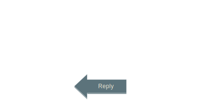
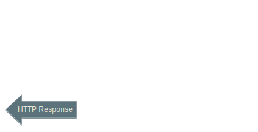
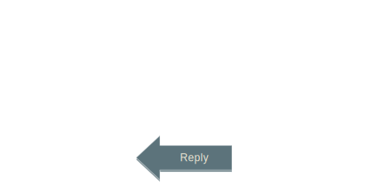
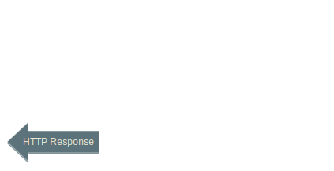
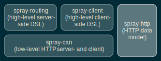

Building your next REST based Web services using Spray

What is for you
- What is Spray
- Why at all it is needed
- How does it fits in with the application you want to expose
- Set up spray application development environment (using sbt)
- Basic Building blocks
- Example of REST end points using spray
- JSON support for (Un)Marshalling
REST(Representational State Transfer)
- In the REST architectural style, data and functionality are considered resources
- These resources are accessed using Uniform Resource Identifiers (URIs)
- It is designed to use a stateless communication protocol, typically HTTP.
- Resources are manipulated using a fixed set of CRUD operations: PUT, GET, POST, and DELETE.
- Resources content can be accessed in a variety of formats, such as HTML, XML, plain text, JSON, and others.
What Is Spray
Spray is suit of libraries for building and consuming restful web services on top of akka
- Embeddable HTTP stack for your Akka (Scala) applications
- Focus: HTTP integration layers, Rather than web applications
- Fully asynchronous, non-blocking
- Immutable, case-class-based HTTP model
- Efficient HTTP parsing and rendering logic
- Fully integrated into Typesafe stack (threadpools, config, debugging, etc.)
Why Spray
- Completely scala based
- Non blocking at each level
- Spray-servlet : It will do that
- Millions of concurrent request
- Easy to implement
Where does it get its power from?
“A toolkit and runtime for building highly concurrent, distributed, and fault-tolerant event-driven applications on the JVM http://akka.io. .”
Actor Model
- A lightweight isolated "process" contains state and behavior
- Communicates only via async & immutable messages (share nothing)
- Has a mailbox (message queue)
- Is supervised by its parent (for managing failure) is location transparent (distributable)
- Is internally thread-safe
- Very lightweight (~400 bytes)
- Can be constructed and torn down very quickly

 



Api Layer Responsibilities
- Request routing based on method, path, query, entity
- (Un)marshalling to / from domain objects
- Encoding / decoding (compression)
- Authentication / authorization
- Caching and serving static content RESTful error handling
Spray Key Components
spray-can
- A low-level, low-overhead, high-performance HTTP server and client built on top of Akka IO.
- Fully asynchronous, non-blocking.
- Low per-connection overhead for supporting many thousand concurrent connections
- Connection management
- Timeout management (for requests and connections)
spray-can :How it works
- Implemented by two types of Akka actors
- HttpListener
- HttpServerConnection
- Requires User Defined Actor to handle the HttpRequest
- Sends HttpRequest message to the user defined Actor
- Receives HttpResponse message from the user defined Actor
spray-routing
- Provides a high-level, very flexible routing DSL for elegantly defining RESTful web services
- Type-safe, yet flexible
-
type Route = RequestContext => Unit